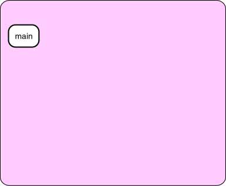

A good answer might be:
No. Now each activation of Pyramid() will first activate
Triangle()
before it activates another Pyramid().
The complete diagram (showing all activations) will be the same, but the
order will be different.
Single Chain of Activations

Play with the activation diagram again and pay attention
to what circles are active and inactive.
Although the complete diagram shows several branches,
there is never more than a single chain of activations. Where there is
a branch in the complete diagram, only one branch or the other is active
at any point in time.
The activation chain is always a singly-linked chain. In the diagram the
active circles have a solid color. The formerly active circles are dotted.
The solid colored circles form a singly-linked chain.
The activation chain behaves like the type of data structure known as
a stack.
A stack is a linear arrangement of data that grows and shrinks, always at the end.
Stacks are an important topic in Computer Science and in the course
Data Structures.
QUESTION 8:

Most computers have only one processor in them.
Say that your program is running and that there are several activations
on the activation chain.
Which activation on the chain represents the code that the processor
is actively executing?